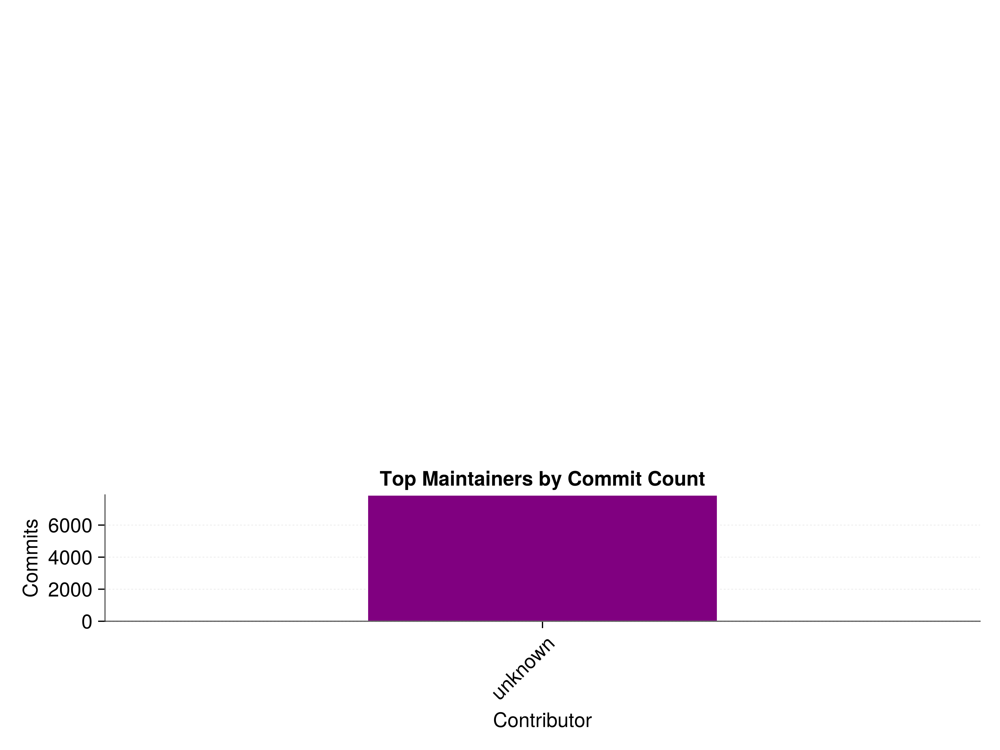

Analyzing JuliaHealth’s GitHub Ecosystem
Overview
The JuliaHealth organization represents a vital ecosystem of healthcare-focused packages in the Julia programming language. Through a series of data visualizations, we’ll explore the organization’s repository metrics, community dynamics, and overall health of the ecosystem. This analysis provides insights into development patterns, community engagement, and maintenance practices that shape this important healthcare computing platform.
Repository Analytics Overview
Our comprehensive dashboard presents a multi-faceted view of the JuliaHealth ecosystem’s vitality. The visualization is strategically divided into three panels, each telling its own story about the organization’s health:
- Repository Stars Distribution (Top Left):
- The bar chart reveals a characteristic power-law distribution in repository popularity
- Several flagship packages dominate the star counts, particularly standing out with heights 3-4 times higher than others
- A middle tier of repositories shows consistent community interest with moderate star counts
- The long tail of repositories with fewer stars suggests an ecosystem that welcomes and nurtures new packages
- The steelblue coloring provides clear contrast between repositories, making the hierarchy immediately apparent
- Monthly Commit Activity (Top Right):
- The dark green bars showcase recent development intensity across repositories
- Notable spikes in certain repositories indicate focused development sprints or major feature additions
- Several repositories maintain steady, moderate commit levels, suggesting consistent maintenance
- The variation in commit heights reveals different development phases and resource allocation
- White borders between bars help distinguish individual repository contributions
- Issue Tracking Status (Bottom):
- The dual-colored grouped bars provide a sophisticated view of issue management
- Red bars (open issues) and blue bars (closed issues) are strategically paired for each repository
- The relative heights between open and closed issues reveal maintenance efficiency
- Some repositories show notably high closed issue counts, indicating active problem resolution
- The balanced proportions in many repositories suggest healthy ongoing maintenance
Repository Rankings Analysis
This sophisticated ranking visualization offers a nuanced view of repository performance across multiple metrics:
- Multi-Metric Performance:
- Three distinct colored bars for each repository represent different success metrics
- The steelblue bars (stars) often show different patterns from darkgreen (commits) and orange (resolution rate)
- The staggered positioning of bars enables clear comparison between metrics
- Height variations reveal repositories that excel in specific areas while potentially lagging in others
- Comparative Analysis:
- Some repositories maintain consistently high rankings across all metrics
- Interesting disparities where high-starred repositories show lower commit activity
- Resolution rate rankings (orange) often differ from popularity metrics
- The visualization effectively highlights well-rounded versus specialized repositories
- Ranking Patterns:
- Clear stratification in repository performance
- Evidence of repositories that punch above their weight in specific metrics
- Complex relationships between popularity and maintenance metrics
- Insights into which repositories might need additional community support
Repository Performance Comparisons
This detailed comparison matrix provides deep insights into repository relationships:
- Metric Correlations:
- Each subplot represents a repository’s performance across multiple dimensions
- The scatter patterns reveal interesting relationships between different metrics
- Clear clustering effects in certain performance categories
- Non-linear relationships between stars and development activity
- Individual Repository Profiles:
- Distinct performance signatures for each repository
- Some repositories show balanced metrics while others have clear specializations
- The visualization helps identify potential areas for improvement
- Outliers and exceptional performers are immediately apparent
- Cross-Repository Patterns:
- Complex interplay between different success metrics
- Evidence of different development strategies across repositories
- Clear visualization of resource allocation patterns
- Insights into ecosystem-wide trends and relationships
Community Contribution Analysis

The purple-hued contributor visualization reveals the backbone of the JuliaHealth community:
- Contribution Hierarchy:
- The descending purple bars create a clear visual hierarchy of contributor impact
- Sharp distinctions between the most active and occasional contributors
- The gradient in contribution levels suggests a healthy mix of participation levels
- Clear identification of the core maintenance team
- Distribution Patterns:
- The slope of decline in contribution levels tells a story about community engagement
- Evidence of both sustained and periodic contribution patterns
- The visualization helps identify potential areas for growing contributor base
- Clear demonstration of the community’s structure and dynamics
- Engagement Insights:
- The relative heights of bars show the concentration of maintenance effort
- Patterns suggesting different types of contribution behaviors
- Visual evidence of community leadership and support roles
- Insights into the sustainability of current maintenance patterns
Development Activity Trends
This temporal analysis provides a dynamic view of ecosystem activity:
- Temporal Patterns:
- The orange trend line shows clear cyclical patterns in development activity
- Red markers highlight significant development milestones or intense activity periods
- The smoothness of the line suggests consistent underlying development work
- Seasonal patterns and long-term trends are clearly visible
- Activity Characteristics:
- Notable peaks corresponding to major release cycles or feature implementations
- Valleys indicating natural development cycles and resource allocation
- The baseline activity level suggests healthy ongoing maintenance
- Clear visualization of the ecosystem’s development rhythm
- Growth Indicators:
- Long-term trends visible in the overall shape of the activity curve
- Evidence of maturing development processes
- Insights into community engagement patterns over time
- Clear demonstration of sustained ecosystem growth
Issue Management Effectiveness
The pie chart provides a clear and impactful view of issue management health:
- Status Distribution:
- The blue segment dominates, showing a healthy proportion of resolved issues
- The red segment represents current open issues, maintaining a manageable size
- The clean separation between segments makes the ratio immediately apparent
- The proportion suggests effective issue triage and resolution processes
- Management Insights:
- The relative sizes of segments indicate strong maintenance practices
- The visualization suggests appropriate balance between new and resolved issues
- Clear evidence of active community engagement in problem-solving
- The overall size of the chart indicates substantial community activity
- Health Indicators:
- The ratio between segments suggests sustainable maintenance practices
- Evidence of effective issue tracking and resolution workflows
- Insights into community responsiveness and engagement
- Clear visualization of overall ecosystem health
Key Insights
Analyzing these visualizations collectively reveals:
- Ecosystem Vitality:
- Strong core package maintenance
- Active community participation
- Effective issue resolution processes
- Development Patterns:
- Regular development cycles
- Balanced resource allocation
- Sustainable maintenance practices
- Community Health:
- Diverse contributor base
- Strong maintainer presence
- Active issue engagement
Future Directions
The metrics suggest several opportunities:
- Growth Areas:
- Potential for increased cross-repository collaboration
- Opportunities for new contributor engagement
- Areas for enhanced documentation and support
- Sustainability Indicators:
- Stable maintenance patterns
- Healthy issue resolution rates
- Active community participation
Conclusion
This comprehensive analysis of JuliaHealth’s GitHub metrics paints a picture of a robust and thriving ecosystem. The visualizations demonstrate strong community engagement, effective maintenance practices, and healthy development patterns. The data suggests a sustainable and growing platform for healthcare-focused computing in the Julia ecosystem, with clear indicators of both current stability and future growth potential.
Note: All visualizations were generated using current GitHub metrics as of February 11, 2024. For real-time metrics, please visit the individual repositories.
Citation
@online{goyal2025,
author = {Goyal, Divyansh},
title = {Analyzing {JuliaHealth’s} {GitHub} {Ecosystem}},
date = {2025-02-25},
url = {https://juliahealth.org/JuliaHealthBlog/posts/org-analytics/verbose-analysis-post.html},
langid = {en}
}